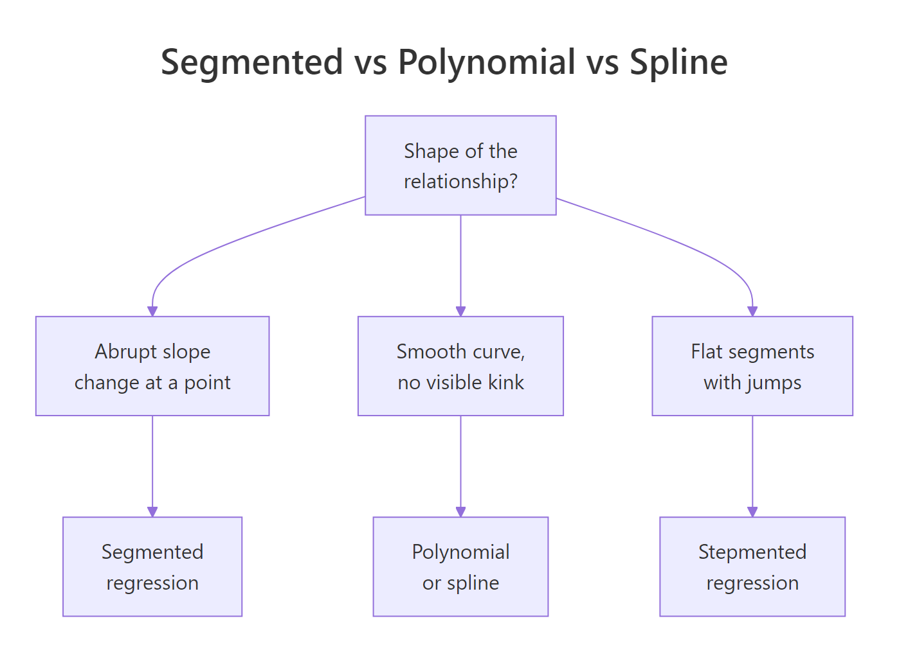
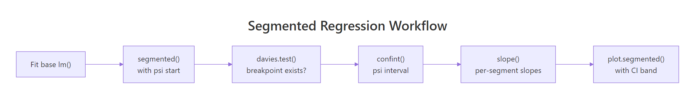

Segmented Regression in R: Breakpoints, Piecewise Linear & Threshold
Segmented regression fits two or more straight lines joined at estimated breakpoints, ideal when a relationship changes slope abruptly rather than curving smoothly. In R, the segmented package estimates the breakpoint, the slope on each side, and a confidence interval for the join itself, starting from any lm() you already have.
When should you use segmented regression instead of polynomial or spline?
A scatter plot that bends is not the same as a scatter plot that kinks. A bend is smooth curvature, a kink is an abrupt change of slope at a specific x. Polynomial and spline regression fit the first cleanly; they wobble through a kink and leave systematic residuals. Segmented regression assumes the kink, estimates where it sits, and returns one slope per regime. The payoff below shows the difference on a simulated dose-response with a threshold at x = 30.
The algorithm refined our starting guess of 25 to a breakpoint of 29.85, within 0.15 of the true value of 30, and the standard error of 0.481 says the location is pinned tight. A linear fit would have split the difference between the two regimes and smeared the slope change across the whole range.

Figure 1: When segmented regression fits better than polynomial or spline.
Try it: Fit a 2-segment model to the built-in cars dataset with starting breakpoint psi = 15, then print the estimated breakpoint. The cars data relates dist (stopping distance) to speed (mph) for 50 cars.
Click to reveal solution
Explanation: The estimated breakpoint near 17.6 mph matches the bend in cars, where stopping distance grows faster with speed at higher speeds.
How do you fit segmented regression by hand with lm()?
Before trusting a package, it helps to see what it is automating. A segmented line with a known breakpoint $c$ is still a linear model in disguise. You add one extra column to your design matrix, a hinge term that is zero below $c$ and increases after:
$$y = \beta_0 + \beta_1 x + \beta_2 (x - c)_{+} + \varepsilon$$
Where:
- $(x - c)_{+}$ =
pmax(x - c, 0)in R, the hinge at $c$ - $\beta_1$ = slope for $x < c$
- $\beta_1 + \beta_2$ = slope for $x > c$
- $\beta_2$ = slope change at the breakpoint (the interesting number)
With a known $c$, lm() can fit this directly. Let's do it with $c = 30$, the value we know is correct, so you can see how the coefficients line up.
Read the coefficients directly: the slope below x = 30 is 0.218, close to the true 0.2. The hinge coefficient 0.763 is the slope change, so the slope above x = 30 becomes 0.218 + 0.763 = 0.981, close to the true 1.0. Those two numbers are what segmented() would also report.
Try it: Refit the manual model with c_known = 35 instead of 30. Compare the residual sum of squares (deviance()) to the fit at c = 30. Which value of c fits the data better?
Click to reveal solution
Explanation: The fit at c = 30 has lower deviance because 30 is closer to the true breakpoint. A grid over many c values would trace out a curve with a minimum near the truth, and that is exactly what segmented() finds without the loop.
How does segmented::segmented() estimate the breakpoint automatically?
Muggeo's algorithm treats the breakpoint as a parameter to estimate, not a constant you supply. Starting from a guess, it alternates between fitting the slopes given the current breakpoint and updating the breakpoint given the current slopes, until both stabilise. No grid search, no loop.

Figure 2: The segmented package workflow, from a base lm to a plotted fit with confidence intervals.
You already fit fit_seg in the first code block. Now print its full summary to read the four numbers that matter: intercept, pre-breakpoint slope, slope change at the kink (U1.x), and the breakpoint location.
The row U1.x is the estimated slope change at the kink, the package's equivalent of our manual $\beta_2$. R flags its t-test with --- because the usual p-value is not valid when the breakpoint itself is estimated. For the slope change, use davies.test() instead (next section).
Pre-breakpoint slope 0.21 and post-breakpoint slope 0.98 are the two numbers a reader wants: the dose-response is roughly flat below the threshold and rises steeply above it.
The 95% interval [28.9, 30.8] contains the true value of 30. Report this interval whenever you report the breakpoint. A point estimate alone hides the uncertainty, which is often the most interesting number in a segmented analysis.
psi = NA. segmented() will pick a quantile-based starting value automatically. This often works for simple cases but can fail on flat stretches, in which case an informed starting value from a scatter plot is safer.Try it: Refit fit_lin with two different starting values, psi = 10 and psi = 50, and confirm both converge to roughly the same estimate. This is a quick sanity check that the estimate is not a local optimum.
Click to reveal solution
Explanation: Both starting values converge to the same global optimum at 29.85, confirming the iterative algorithm found a stable breakpoint rather than a local minimum.
How do you test whether a breakpoint actually exists?
Here is the trap: segmented() always returns a breakpoint, even when the true relationship is a straight line. The algorithm will happily fit a kink to noise if you ask it to. You need a formal test for "does a breakpoint exist at all?" before trusting any of the estimates above.
davies.test() answers that question. It tests the null hypothesis that the slope is constant (no breakpoint) against the alternative that there is a breakpoint somewhere in the predictor's range. A small p-value rejects the null and supports the segmented fit.
p-value below 2.2e-16 is overwhelming evidence of a breakpoint. The "best at" value of 31.22 is the candidate breakpoint the test found most favourable; it is close to the segmented() estimate of 29.85 but uses a different grid, so slight differences are expected.
p-value 0.68 does not reject the null, so there is no evidence of a breakpoint. segmented() would still return a "breakpoint" if asked, but that number is fitted to noise and has no real meaning. Always davies.test first.
confint(fit_seg) alongside the point estimate so readers see the uncertainty in location.Try it: Run davies.test() on mpg ~ hp from mtcars. A small p-value would say horsepower's effect on mileage changes slope at some point. Interpret what you see.
Click to reveal solution
Explanation: The p-value of 0.0026 rejects the no-breakpoint null, so the mpg-hp relationship likely has a kink around 97 hp: cars below that lose mileage fast per extra horsepower, cars above that lose mileage more slowly. A segmented fit would quantify both slopes.
How do you fit multiple breakpoints?
Real data often has more than one regime change. segmented() handles multiple breakpoints in the same predictor by accepting a vector of starting values in psi. If you also don't know how many breakpoints there are, selgmented() picks the number for you using BIC or a sequence of davies tests.
Start by simulating three-segment data with kinks at x = 20 and x = 50, then fit the model with two starting breakpoints.
Both breakpoints recover within 0.2 of the true values. The standard errors pin down the first kink (0.24) tighter than the second (0.49), because the first regime has more data packed into it at the simulated range.
When you don't know the number of segments, use selgmented():
selgmented() returns 2, matching the true number of breakpoints. Under the hood, it fits models with 0, 1, 2, and 3 breakpoints, then picks the one with the best BIC.
type = "score" which performs sequential Davies tests at each candidate K.Try it: Run selgmented() on df3 with type = "score" (sequential Davies tests). Does it select the same K = 2 as BIC?
Click to reveal solution
Explanation: Both BIC and sequential score tests agree on K = 2 breakpoints here because the signal is strong. In noisier data, the two criteria sometimes disagree, and BIC tends to be more conservative.
How do you plot segmented fits with confidence bands?
plot.segmented() draws the fitted broken line but not the raw data. Plot the points first, then overlay the fit. Pass conf.level = 0.95 to add a shaded pointwise confidence band.
The shaded band narrows away from the breakpoint and widens near it, because the model is least certain right where the slope flips. Readers who want one image of a segmented fit want this one: raw data, fitted break, visible uncertainty.
For a ggplot version, extract pointwise predictions and CI with broken.line():
plot.segmented() draws the fit, not the raw data. If you skip the initial plot(y ~ x, ...) call, you get a broken line floating on a blank canvas. Always plot the scatter first, then overlay.Try it: Recreate the ggplot above but colour the points by whether they sit before or after the estimated breakpoint, using the helper column df_kink$segment.
Click to reveal solution
Explanation: Splitting points by regime makes the two slopes visually distinct before you even add the fitted line, a quick way to convince a reader that the kink is real.
Practice Exercises
Exercise 1: Report the breakpoint with its 95% CI
Using df_kink from earlier in the tutorial, fit a segmented model, report the 95% confidence interval for the breakpoint, and confirm a davies test rejects the no-breakpoint null at the 1% level. Save the CI to my_psi_ci.
Click to reveal solution
Explanation: The CI [28.9, 30.8] and the Davies p-value below 1e-15 together say: yes, there is a breakpoint, and it is very likely between x = 28.9 and x = 30.8.
Exercise 2: Let selgmented choose K
Generate three-segment data with slopes 0.2, 1.0, 0.3 and breakpoints at 20 and 50, using set.seed(42) and 200 points. Fit a base lm() and use selgmented() with BIC to pick the number of breakpoints. Confirm it selects K = 2.
Click to reveal solution
Explanation: BIC penalises extra breakpoints, so when the true K is 2, a K=3 model incurs a penalty without reducing the residual sum of squares enough to compensate. selgmented reports K=2.
Exercise 3: Segmented vs cubic spline by AIC
On df_kink, fit a cubic spline with splines::bs(x, df = 4) and compare its AIC to the segmented fit. Which model wins, and why should you not be surprised?
Click to reveal solution
Explanation: The segmented fit wins by about 7 AIC units because the true data-generating process has a kink, and segmented regression spends its 5 parameters exactly where they are needed. The spline wastes degrees of freedom on smooth curvature that is not in the data.
Complete Example
Muggeo's stagnant dataset ships with the segmented package and is the textbook demonstration of a kink. It relates log-concentration of a chemical solution to a response; the slope changes sign around log.conc = -0.7.
The breakpoint sits at log.conc = -0.72 with a tight 95% CI of [-0.74, -0.69]. The slope switches from -0.42 before the breakpoint to -1.01 after, so the response falls roughly 2.4 times faster past the threshold. The Davies p-value of 1.8e-15 rules out "no kink" as an explanation.
Summary
| Function | Purpose | When to use |
|---|---|---|
segmented() |
Estimate breakpoint + slopes | The main workhorse; always start here |
davies.test() |
Does a breakpoint exist at all | Before trusting any segmented fit |
confint() |
95% CI for breakpoint location | Always report alongside the point estimate |
slope() |
Per-segment slopes with SE | For interpretation of what changed |
selgmented() |
Choose number of breakpoints | When K is unknown; use BIC by default |
broken.line() |
Pointwise fitted + SE vectors | For ggplot ribbons or custom plots |
lm(y ~ x + pmax(x - c, 0)) |
Manual fit with known breakpoint | Rare in practice; useful for teaching |
Segmented regression shines when theory or a scatter plot shows an abrupt slope change at an unknown point. Pair segmented() with davies.test() so you never report a breakpoint that is not there, and always report a confidence interval so readers see the uncertainty in the location.
References
- Muggeo, V. M. R. (2003). Estimating regression models with unknown break-points. Statistics in Medicine, 22(19), 3055-3071. Link
- Muggeo, V. M. R. (2008). segmented: An R package to Fit Regression Models with Broken-Line Relationships. R News 8(1), 20-25. Link
- Muggeo, V. M. R. (2016). Testing with a nuisance parameter present only under the alternative: a score-based approach with application to segmented modelling. Journal of Statistical Computation and Simulation, 86(15), 3059-3067. Link
- Muggeo, V. M. R. (2017). Interval estimation for the breakpoint in segmented regression: a smoothed score-based approach. Australian & New Zealand Journal of Statistics, 59(3), 311-322. Link
- Davies, R. B. (1987). Hypothesis testing when a nuisance parameter is present only under the alternative. Biometrika, 74(1), 33-43. Link
- CRAN, segmented package reference manual. Link
Continue Learning
- Polynomial and Spline Regression in R, when your scatter plot curves smoothly instead of kinking, reach for
poly(),bs(), ormgcv::gam(). - Regression Diagnostics in R, a systematic U-shape in the residuals-vs-fitted plot is the classic hint that a missing breakpoint is hiding inside your linear model.
- Linear Regression Assumptions in R, segmented regression relaxes the constant-slope assumption; this post covers the other assumptions that still have to hold.